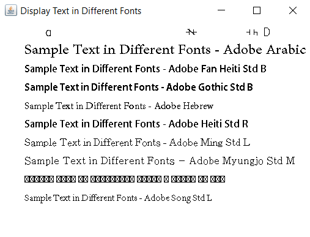

14. Java Program to Check Which Fonts are Available in a Local System
import java.awt.*;
import java.awt.event.WindowAdapter;
import java.awt.event.WindowEvent;
import java.awt.GraphicsEnvironment;
public class FontDisplayApp extends Frame {
private String[] fontNames;
public FontDisplayApp() {
// Set up the frame
setTitle("Display Text in Different Fonts");
setSize(500, 600);
setLayout(new FlowLayout());
// Retrieve available font family names
GraphicsEnvironment ge = GraphicsEnvironment.getLocalGraphicsEnvironment();
fontNames = ge.getAvailableFontFamilyNames();
// Set up close operation
addWindowListener(new WindowAdapter() {
public void windowClosing(WindowEvent windowEvent) {
System.exit(0);
}
});
}
public void paint(Graphics g) {
super.paint(g);
// Starting coordinates for text
int y = 60;
String text = "Sample Text in Different Fonts";
// Display the text in each available font
for (int i = 0; i < fontNames.length && i < 10; i++) { // Limiting to 10 fonts for display
g.setFont(new Font(fontNames[i], Font.PLAIN, 16));
g.drawString(text + " - " + fontNames[i], 50, y);
y += 30; // Move down for the next line
}
}
public static void main(String[] args) {
// Create and show the frame
FontDisplayApp app = new FontDisplayApp();
app.setVisible(true);
}
}
OUTPUT
